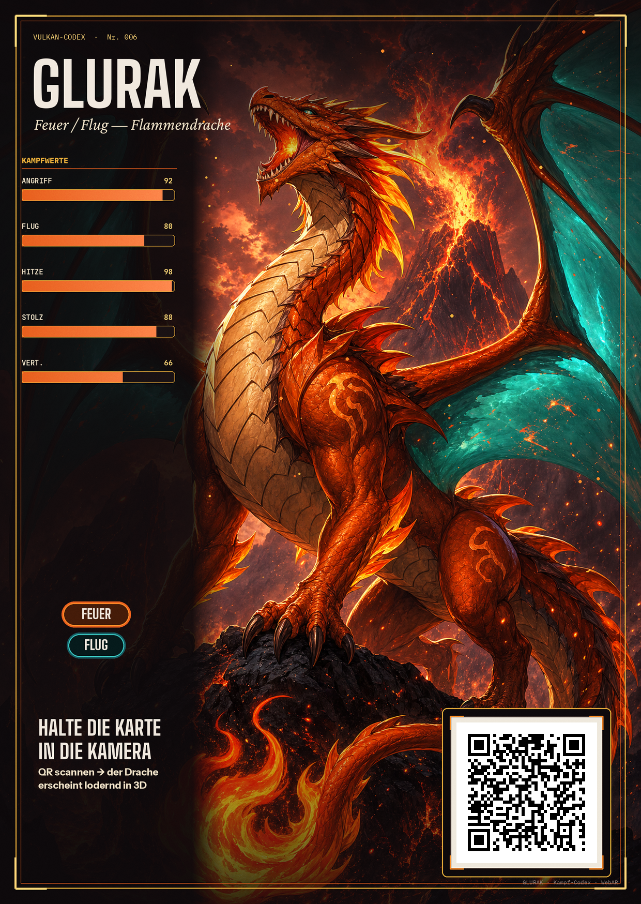
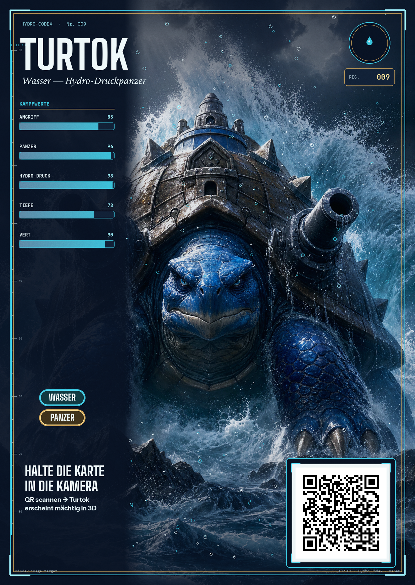
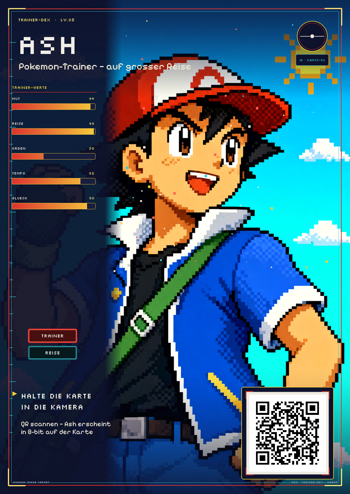

Design-Exploration: vier Karten im gemeinsamen „Codex"-Format, individuell an das Motiv angepasst. QR scannen → Karte in die Kamera halten → die Figur erscheint bewegt auf der Karte.



Interne Design-Exploration (Bild-/3D-Werkzeuge). Für einen echten Einsatz würden die Motive durch Eigenkreaturen oder lizenzierte Assets ersetzt. AR läuft komplett lokal im Handy — keine App, keine personenbezogenen Daten.